Designing With Storyboards
Last tutorial we learned how to create beautifully designed apps using Sketch, and share these hi-fi prototypes via Flinto. Up until this point however, everything has been html based. It's time for us to try our hand at making a native iOS app.
Introducing Xcode
Xcode is Apple's integrated development environment (IDE) for building native apps - mobile and desktop. Xcode is only available for Macintosh computers. If you don't have a Mac, unfortunately you can't complete the rest of the tutorials. If you have a mac, go to the App Store and download it now. This tutorial uses the latest public version of XCode (6.3) and Yosemite 10.10.3.
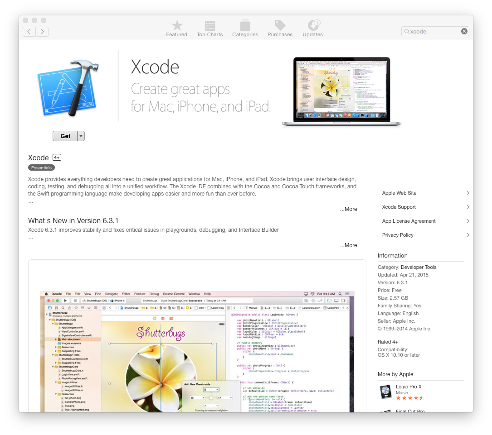Once Xcode is installed, go ahead and create a new project, CloudTasks.
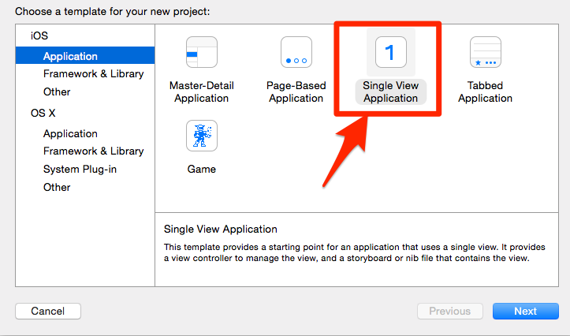Once your project is created, you will be presented with a project window that contains the project files on the left, the editor in the center of the screen, and contextual palette and controls on the right.
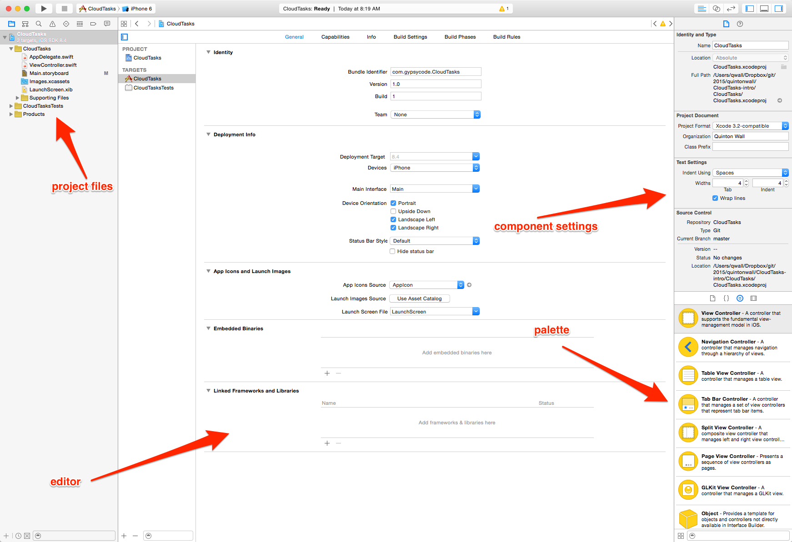Adding Images
Now, select Images.xcassets from the project menu on the left. This file is like a binder for storing all of your image assets for your project. It has support for different resolutions of images depending on which device the app is running on, and lets you reference images in your app by their name for dynamic rendering.
If you have not done so already, export your sketch artboards from the previous tutorial.
Then, drag them into the Images.xcassets file.
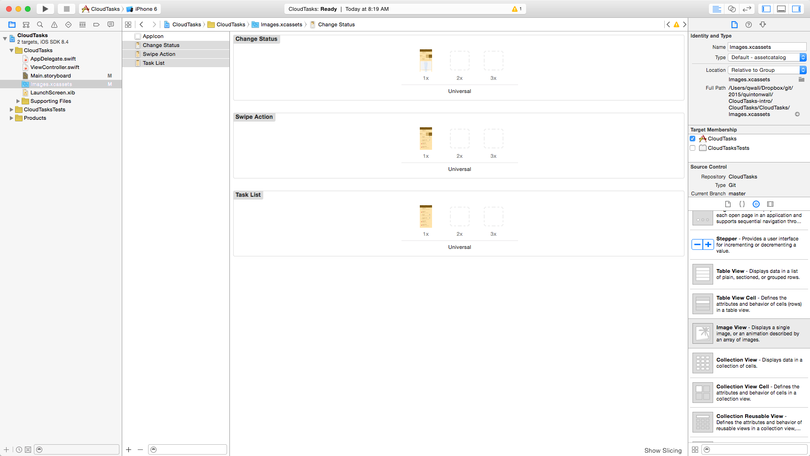Storyboards
We will take these artboard exports and map them to our UI within Xcode. Start by locating the file Main.storyboard in the project files on the left. Once you have found it, click it to load the file into the editor window. You should now see what we call a storyboard.
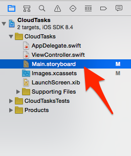Storyboards work similar to the artboards you created in Sketch; they are the visual representation of an app. I like to think of storyboards as comic strip where I can layout the different scenes and tell my story in the app. Right now you only see one screen, View Controller, with an arrow pointed to it. This arrow represents where your app starts. If you ran this project now, this View Controller would start up. But it's not too exciting yet - there is nothing on it.
Unlike Sketch and artboards which don't support transitions (we used Flinto to create html-based transitions), Storyboards make it incredibly easy to connect screens together. From the object library palette in the bottom right, drag two more view controllers onto the storyboard. These will map to the three artboards we created in sketch.
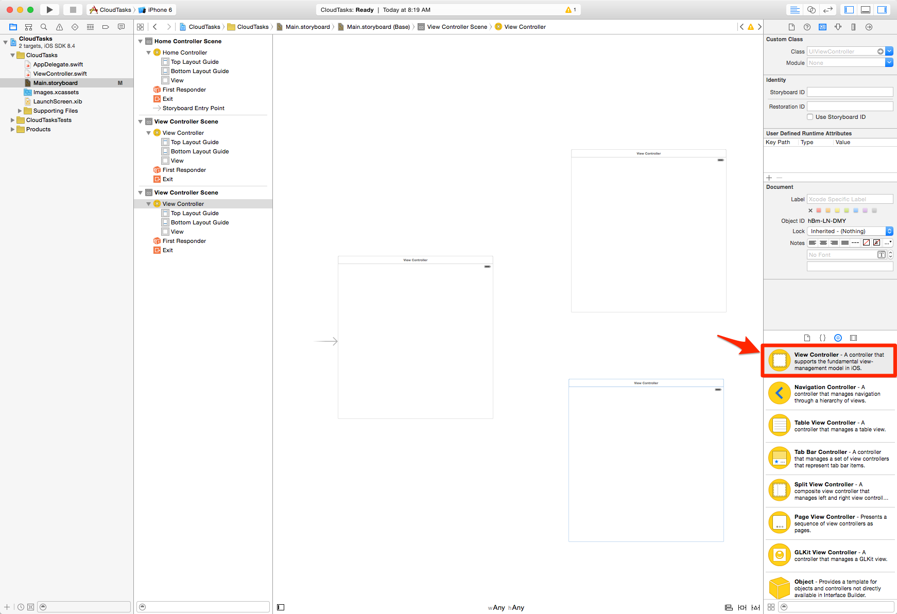Then, drag and drop an Image View component into each View Controller and make it fill the controller.
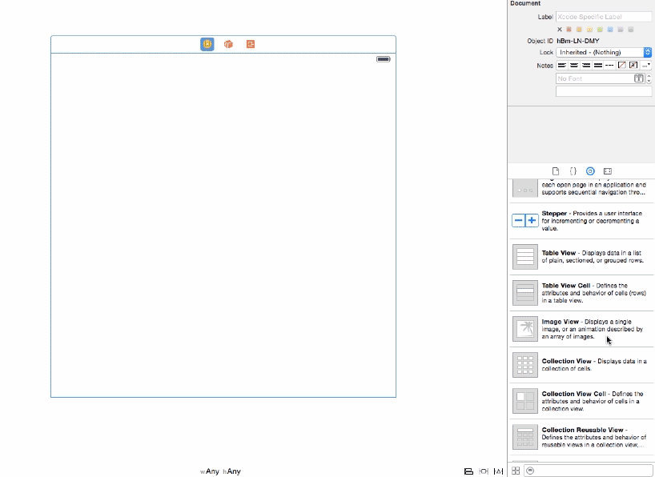Finally, for each Image View Component, change the source image to point to the artboard images you added, making sure that the ViewController with the arrow uses the Task List image, and Change Status image and Swipe Action image are applied to the other View Controllers like the screenshot below.
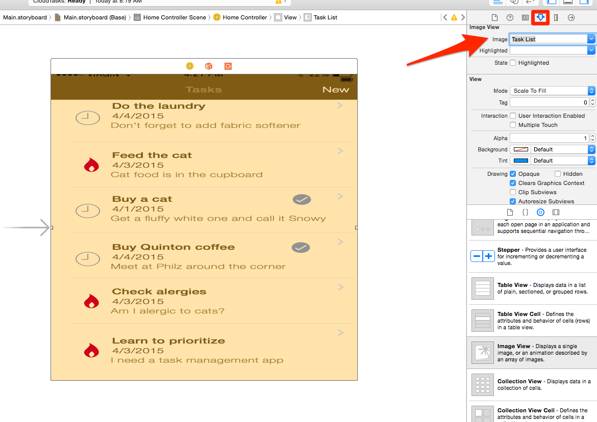 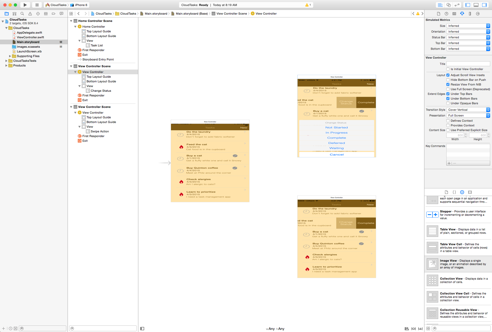You may notice when specifying images into your View Controllers that the images may look a little stretched. This is because our View Controllers are set to width and height of Any. Once we get into autolayouts in a later tutorial, this will make more sense, but for now, a width of height of Any tells Xcode to render the app at the same size for any device (iphone 4,5,6, 6+, iPad etc). In order to make the images fit well though, we need to set a few sizing constraints. Select the View Controllers view, right click and drag, then choose Equal Widths. Repeat, and this time choose Equals Heights. These constraints tell Xcode to render the image to equal the width and height of the device.
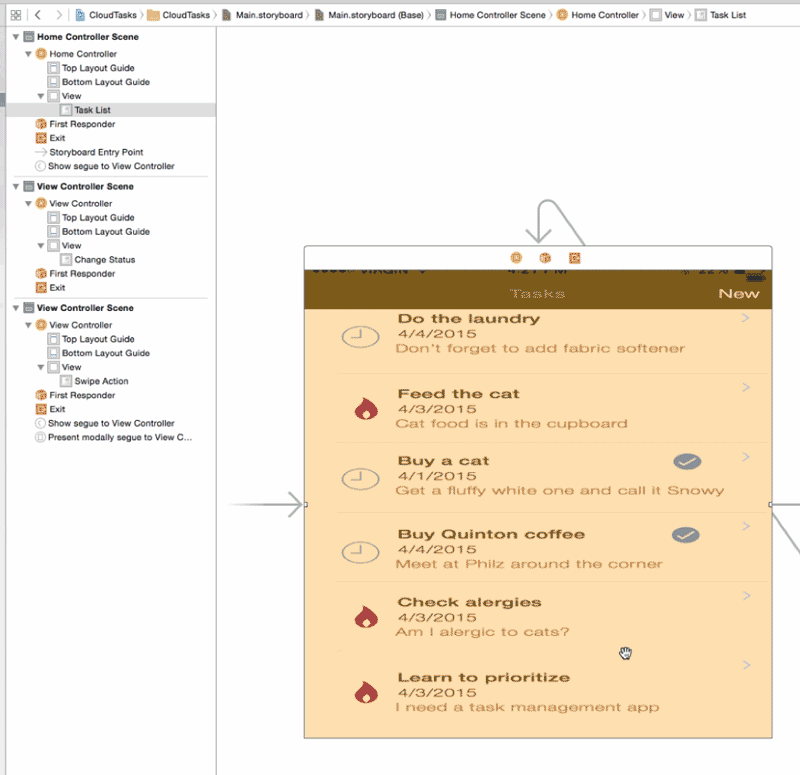Go ahead and repeat this for the two other view controllers.
Transitions with Seques
It's time to run your app. Click play to launch the simulator.
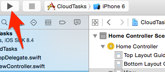Once it loads in the iOS simulator, you will be presented with a screen that looks exactly like the Task List image. This is because that View Controller is specified as the initial controller (indicated by the arrow on our storyboard). But you can't click on it to access the other screens. The next thing we want to add is transitions between screens. In Xcode, these transitions are managed by Segues.
Segues allow you to specify which screen to transition to, the animation to use in the transition, and which component triggers the transition (buttons, or swipes for example) without the need to write any code. We are going to create some very simple segues between our views. In order to do this, we need to tell our app that the imageview component which we added can accept tap events. Unlike components like buttons, which are enabled to handle taps by default, images need a few extra settings: we need select the User Interaction enabled checkbox on our image view, and add a tap recognizer.
Start by selecting the image view component on Tasks List, then changing it's properties to accept user interactions.
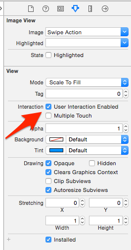Now, select the tap recognizer from the object palette, drop it onto the image, select the component, right click, drag to the Swipe Action controller, and choose show from the popup menu. That's all we need to do to make a transition in iOS.
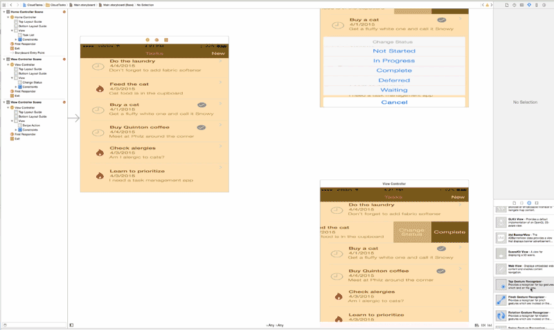Next, we will create another segue, a popup modal transition to show the Change Status screen. We will use the popup model transition because it allows us to specify a transition animation. In this case, we want to transition to rise from the bottom to simulate the menu item appearing.
Go ahead and repeat the process of checking User Interactions and adding the tap recognizer, but select the modal option from the popup this time. If you are feeling adventous, try one of the other animation styles like page curl. 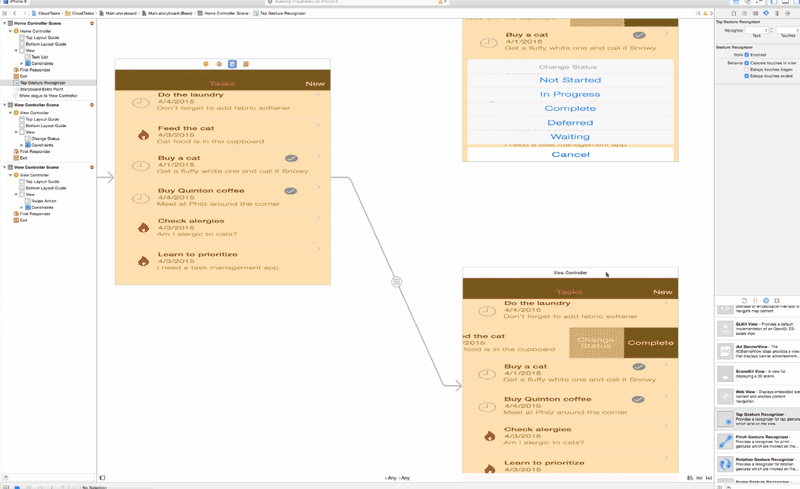Run the app again, this time tapping on the screens. You should now have some transitions. Nice huh? Of course, we can't go back in our transitions as we never connected what iOS developer call an unwind transition. Don't worry, you will have plenty of hands on experience soon working with more seques when we build our final app.
Congratulations! You just build your first fully native iOS app.
Summary
During this tutorial, we had a brief introduction to Xcode, how to create a project, add images, and got hands on with storyboards and segues. At this point in the series, we can consider our app design complete. The next set of tutorials will build upon our introduction to Xcode and start to learn how to write Swift.
Tweet